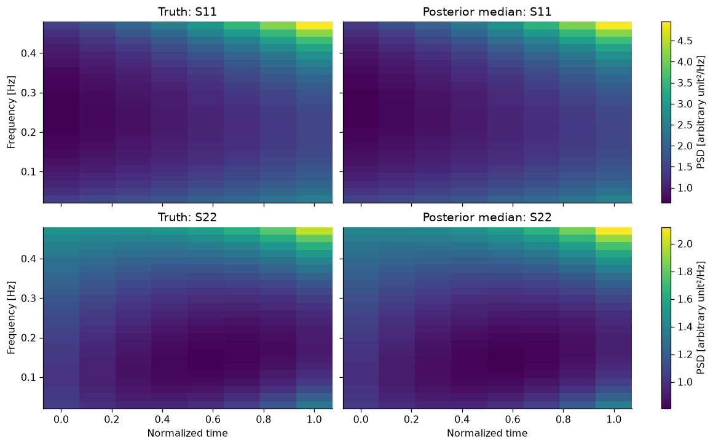
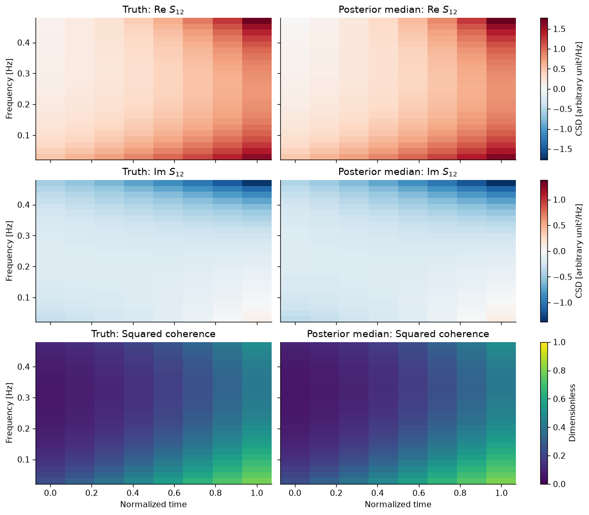
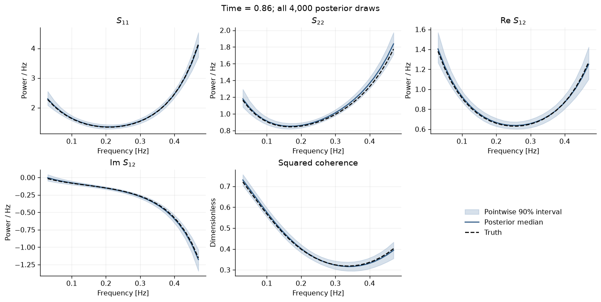

Multivariate time-varying PSD#
This is the stationary multivariate model, with the time basis from the scalar time-varying example added to each spline. The Cholesky decomposition stays the same. Each frequency-dependent curve becomes a surface depending on both time and frequency:
The diagonal entries are the channels’ PSDs; the off-diagonal entries are their complex cross-spectra. We will fit a two-channel example in which both change with time.
To check the inference calculation first, we generate independent Gaussian coefficient vectors directly. We do not generate a time series or apply a transform in this example. The saved run has zero divergences, no maximum-depth hits, and maximum \(\widehat R=1.0039\). One successful simulation does not establish interval calibration or validate a LISA analysis.
Run the cells in order. The fit uses four NUTS chains, each with 1,000 warmup iterations and 1,000 retained draws. Allow a few minutes including compilation. For a fresh environment, install the core revision used for this tutorial before starting the kernel:
python -m pip install "LogPSplinePSD @ git+https://github.com/nz-gravity/LogPSplinePSD.git@ef04c24f5c15c0dae8864e419f06c43e9687c50f"
import os
import time as timer
import warnings
os.environ.setdefault("XLA_FLAGS", "--xla_force_host_platform_device_count=1")
import jax
jax.config.update("jax_enable_x64", True)
import arviz_stats as azs
import matplotlib.pyplot as plt
import numpy as np
import pandas as pd
from IPython.display import display
get_ipython().run_line_magic("matplotlib", "inline")
from log_psplines import LogPSpline, PowerConfig, SplineBasis, WishartGridData, fit
from log_psplines.diagnostics.sampling import sampling_diagnostics
from log_psplines.logger import set_level
set_level("WARNING")
warnings.filterwarnings(
"ignore", message="There are not enough devices to run parallel chains.*",
category=UserWarning, module="log_psplines.inference.nuts",
)
plt.rcParams.update({"figure.dpi": 115, "font.size": 10, "axes.spines.top": False,
"axes.spines.right": False, "savefig.bbox": "tight"})
SEED = 31415
rng = np.random.default_rng(SEED)
print(f"JAX: {jax.__version__}; float64: {jax.config.x64_enabled}")
print(f"Fixed simulation and sampler seed: {SEED}")
print("Four chains run sequentially on one JAX device.")
JAX: 0.12.0.1; float64: True
Fixed simulation and sampler seed: 31415
Four chains run sequentially on one JAX device.
1. Add time dependence to the same Cholesky model#
In the stationary example, we wrote
Here we use exactly the same expression at each time and frequency:
For our two channels,
We recover the spectral matrix using
Positive \(\delta_j(t,f)^2\) ensure that this matrix is positive definite. As before, \(\delta_j^2\) are the conditional spectra in the Cholesky decomposition, and \(\theta_{21}\) is a regression coefficient. They are not all entries of \(\mathbf S\). For example, suppressing \((t,f)\) briefly,
Replace each frequency spline with a tensor spline#
The stationary diagonal spline was
Now use the row vectors of time and frequency B-splines, \(\mathbf b_t(t)\) and \(\mathbf b_f(f)\), from the scalar time-varying example. Replace the coefficient vector by a \(K_t\times K_f\) coefficient matrix:
The real and imaginary parts of each off-diagonal coefficient get the same treatment:
For two channels there are therefore four real spline surfaces: \(\log\delta_1^2\), \(\log\delta_2^2\), \(\theta_{21}^{(\mathrm R)}\) and \(\theta_{21}^{(\mathrm I)}\). For \(p\) channels there are \(p^2\). No ANOVA decomposition is needed.
In the simulation code below, h1 and h2 hold \(\log\delta_1(t,f)^2\) and \(\log\delta_2(t,f)^2\), and theta holds \(\theta_{21}(t,f)\). Thus np.exp(h1) gives \(\delta_1^2\), not \(\delta_1\).
# Smooth analytic truth, constructed independently of the package reconstruction.
time = np.linspace(0.0, 1.0, 8)
frequency = np.linspace(0.03, 0.47, 24)
t, f = np.meshgrid(time, frequency, indexing="ij")
u = t - 0.5
v = 2 * (f - frequency.min()) / np.ptp(frequency) - 1
h1 = 0.9 * u + 0.8 * v**2 + 0.35 * t * v
h2 = -0.3 - 0.65 * u + 0.45 * v + 0.4 * u * v
theta = (0.35 + 0.30 * u - 0.15 * v) + 1j * (0.20 - 0.16 * u + 0.10 * v + 0.10 * u * v)
d1, d2 = np.exp(h1), np.exp(h2)
truth = np.empty((*t.shape, 2, 2), dtype=complex)
truth[..., 0, 0] = d1
truth[..., 0, 1] = d1 * theta.conj()
truth[..., 1, 0] = truth[..., 0, 1].conj()
truth[..., 1, 1] = d2 + abs(theta)**2 * d1
truth_coherence = abs(truth[..., 0, 1])**2 / (truth[..., 0, 0].real * truth[..., 1, 1].real)
assert np.linalg.eigvalsh(truth).min() > 0
assert np.max(abs(truth[-1] - truth[0])) > 0.5
assert np.max(abs(truth[..., 0, 1].real)) > 0
assert np.max(abs(truth[..., 0, 1].imag)) > 0
print(f"Truth: {len(time)} times × {len(frequency)} frequencies × 2 channels")
print(f"Minimum eigenvalue: {np.linalg.eigvalsh(truth).min():.3f}")
print(f"Squared coherence range: {truth_coherence.min():.3f}–{truth_coherence.max():.3f}")
Truth: 8 times × 24 frequencies × 2 channels
Minimum eigenvalue: 0.192
Squared coherence range: 0.064–0.788
2. Generate coefficients in the likelihood’s units#
The stationary notebook uses Fourier coefficients with covariance \(T\mathbf S(f)\), where \(T\) is the block duration. Dividing those coefficients by \(\sqrt T\) would give
We work directly in this normalized convention. At each \((t,f)\) we generate 32 independent, zero-mean proper complex Gaussian vectors,
independently across cells too. These are simulated vectors, not Fourier coefficients extracted from a record. The code generates unit-covariance complex noise and multiplies it by a Cholesky factor of the known \(\mathbf S(t,f)\).
The data object stores the sufficient statistic
and its count \(n_{tf}=32\). This is a sum, not an average. We assign the covariance one-sided PSD units directly; there is no transform normalization or two-sided conversion to perform in this simulation. ENBW is one.
n_replicates = 32
z = (rng.normal(size=(*t.shape, 2, n_replicates))
+ 1j * rng.normal(size=(*t.shape, 2, n_replicates))) / np.sqrt(2)
coefficients = np.linalg.cholesky(truth) @ z
data = WishartGridData.from_coefficients(
coefficients, time, frequency, units="arbitrary_unit^2/Hz",
preprocessing={"source": "independent zero-mean proper complex Gaussian simulation"},
)
assert np.all(data.counts == n_replicates)
assert data.enbw == 1.0
print(f"Independent vectors: {int(data.counts.sum()):,}; observations per cell: {n_replicates}")
print(f"Stored factor width: {data.u_re.shape[-1]} (compression preserves Y and counts)")
Independent vectors: 6,144; observations per cell: 32
Stored factor width: 2 (compression preserves Y and counts)
3. Use the same row likelihood and Gaussian marginalization#
As in the stationary notebook, factor the sufficient statistic as
and let \(\mathbf u_j(t,f)\) be row \(j\) of \(\mathbf U(t,f)\). The row residual is
Its log likelihood is
This is the stationary row likelihood summed over time as well as frequency. There is no \(T\) in the denominator because we have already normalized the coefficients by \(\sqrt T\). The norm is squared, just as in the stationary example.
Hold \(\delta_j(t,f)^2\) and the smoothing scales fixed for a moment. The residual is linear in the real spline coefficients defining \(\theta_{jl}(t,f)\), so its squared norm is quadratic in those coefficients. Combined with their Gaussian prior, this gives the same Gaussian integral derived in the stationary multivariate example.
The code integrates these coefficients out while NUTS samples the remaining parameters. For each retained sample, it restores one joint Gaussian draw of the real and imaginary cross-coefficients and reconstructs \(\mathbf S(t,f)\). Keeping this correlated draw, rather than only its conditional mean, preserves their uncertainty.
Implementation choices for this run#
We use three time coefficients and four frequency coefficients for each surface. This small basis can represent the simulated fields. The fit receives the observations and model, never the truth.
Each surface has its own time and frequency smoothing scales, with independent \(\operatorname{HalfNormal}(1.28)\) priors. As in the scalar tutorial, the Gaussian coefficient prior penalizes roughness in both directions. The matrix implementation uses maximum-entry-normalized derivative penalties, a \(10^{-6}\) ridge in the frequency penalty, and no separate null-space prior; these details differ from the scalar tutorial’s prior. See the API reference for the precise matrix prior.
Coefficient sampling scales are chosen automatically from the prior and fixed likelihood information. This changes sampling coordinates while preserving the physical prior. No extra scaling settings are needed. This time-varying matrix path currently supports NUTS.
basis_time = SplineBasis.from_grid(
time, 0, degree=2, penalty_order=2, normalization="max", ridge=0.0,
)
basis_frequency = SplineBasis.from_grid(
frequency, 1, degree=2, penalty_order=2, normalization="max", ridge=1e-6,
)
model = LogPSpline(frequency=basis_frequency, time=basis_time)
config = PowerConfig(
structure="tensor", method="nuts", roughness_scale=1.28,
n_warmup=1000, n_samples=1000, num_chains=4, seed=SEED,
target_accept_prob=0.95, max_tree_depth=10, dense_mass=True,
spectrum_draws=50, spectrum_chunk_size=8, progress_bar=False,
)
print(f"Basis per field: {basis_time.basis.shape[1]} × {basis_frequency.basis.shape[1]}")
started = timer.perf_counter()
result = fit(data, config, model=model)
elapsed_seconds = timer.perf_counter() - started
assert result.metadata["theta_parameterization"] == "marginalized"
print(f"Fit and reconstruction: {elapsed_seconds:.1f} seconds")
print(f"NUTS dimensions per Cholesky row: {result.metadata['row_latent_dimensions']}")
print(f"Retained posterior: {result.posterior.sizes['chain']} chains × {result.posterior.sizes['draw']} draws")
Basis per field: 3 × 4
Fit and reconstruction: 50.7 seconds
NUTS dimensions per Cholesky row: [14, 18]
Retained posterior: 4 chains × 1000 draws
4. Check the sampler before interpreting the spectra#
The two Cholesky rows are sampled separately, as in the stationary example. First check that no divergences or maximum-depth hits occurred. Then check agreement between chains using \(\widehat R\), the effective sample sizes (ESS), and energy BFMI.
The code requires finite diagnostics, \(\widehat R<1.01\), bulk and tail ESS of at least 400, BFMI of at least 0.3, and no divergences or depth hits. Passing these checks supports this run’s sampling reliability. It does not establish interval calibration or rule out model bias.
row_diagnostics = pd.DataFrame(sampling_diagnostics(result)["nuts"])
display(row_diagnostics.drop(columns=["step_size", "n_draws"]))
diagnostics = azs.summary(result.to_arviz(), kind="diagnostics", round_to="none")
bfmi_by_row = {}
for row in range(2):
energy = np.asarray(result.sample_stats[f"energy_channel_{row}"])
bfmi_by_row[row] = np.mean(np.diff(energy, axis=1)**2, axis=1) / np.var(energy, axis=1, ddof=1)
diagnostics_finite = (
np.isfinite(diagnostics[["r_hat", "ess_bulk", "ess_tail"]].to_numpy()).all()
and np.isfinite(list(bfmi_by_row.values())).all()
)
diagnostic_values = {
"Maximum R-hat": float(diagnostics["r_hat"].max()),
"Minimum bulk ESS": float(diagnostics["ess_bulk"].min()),
"Minimum tail ESS": float(diagnostics["ess_tail"].min()),
"Minimum BFMI": float(np.min(list(bfmi_by_row.values()))),
"Divergences": int(row_diagnostics.divergences.sum()),
"Maximum-depth hits": int(row_diagnostics.max_treedepth_hits.sum()),
}
display(pd.Series(diagnostic_values, name="Observed value").to_frame())
convergence_passed = (
diagnostics_finite
and diagnostic_values["Maximum R-hat"] < 1.01
and diagnostic_values["Minimum bulk ESS"] >= 400
and diagnostic_values["Minimum tail ESS"] >= 400
and diagnostic_values["Minimum BFMI"] >= 0.3
and diagnostic_values["Divergences"] == 0
and diagnostic_values["Maximum-depth hits"] == 0
)
print("All R-hat, ESS and BFMI values finite:", diagnostics_finite)
print("Convergence checks:", "PASS" if convergence_passed else "NOT ALL PASSED — inspect before interpreting")
# Percentiles use every retained draw; spectrum_draws controls only a stored preview.
real_q = result.quantiles(kind="real").values
imag_q = result.quantiles(kind="imag").values
coherence_q = result.quantiles(kind="coherence").values[..., 0, 1]
median = real_q[1] + 1j * imag_q[1]
preview = result.spectral_density
assert np.isfinite(preview).all()
np.testing.assert_allclose(preview, preview.conj().swapaxes(-1, -2), atol=1e-12)
assert np.linalg.eigvalsh(preview).min() > 0
print(f"Stored {preview.shape[0]} × {preview.shape[1]}-draw matrix preview is finite, Hermitian and positive definite.")
| factor | divergences | rhat_max | ess_bulk_min | ess_tail_min | max_treedepth_hits | |
|---|---|---|---|---|---|---|
| 0 | 0 | 0 | 1.002279 | 3565.027998 | 2020.794420 | 0 |
| 1 | 1 | 0 | 1.004482 | 3394.114316 | 2189.936272 | 0 |
| Observed value | |
|---|---|
| Maximum R-hat | 1.004482 |
| Minimum bulk ESS | 3394.114316 |
| Minimum tail ESS | 2020.794420 |
| Minimum BFMI | 0.962445 |
| Divergences | 0.000000 |
| Maximum-depth hits | 0.000000 |
All R-hat, ESS and BFMI values finite: True
Convergence checks: PASS
Stored 4 × 50-draw matrix preview is finite, Hermitian and positive definite.
5. Compare the recovered spectra with the truth#
We now reconstruct \(\mathbf S(t,f)\) from each posterior draw. The first plot compares the two PSDs, \(S_{11}(t,f)\) and \(S_{22}(t,f)\), with their truths. The next plot compares the real and imaginary parts of \(S_{12}(t,f)\) and the squared coherence,
Each truth/median pair shares a color scale. We use \(S_{12}=E[\widetilde d_1\widetilde d_2^*]\), so its imaginary part has the opposite sign to that of \(\theta_{21}\). Coherence is computed for each draw before taking percentiles, rather than from the median matrix.
The final plot shows a preselected time slice with pointwise 90% credible intervals. These are marginal summaries, not simultaneous bands; componentwise matrix medians are not themselves posterior matrix draws.
fig, axes = plt.subplots(2, 2, figsize=(10, 6.2), sharex=True, sharey=True, layout="constrained")
for channel in range(2):
panels = [truth[..., channel, channel].real, median[..., channel, channel].real]
low, high = min(a.min() for a in panels), max(a.max() for a in panels)
for column, (label, values) in enumerate(zip(["Truth", "Posterior median"], panels)):
ax = axes[channel, column]
mesh = ax.pcolormesh(time, frequency, values.T, shading="nearest", cmap="viridis", vmin=low, vmax=high)
ax.set_title(f"{label}: S{channel + 1}{channel + 1}")
if column == 0:
ax.set_ylabel("Frequency [Hz]")
fig.colorbar(mesh, ax=axes[channel, :], label="PSD [arbitrary unit²/Hz]")
for ax in axes[-1]:
ax.set_xlabel("Normalized time")
plt.show()

fields = [
(r"Re $S_{12}$", truth[..., 0, 1].real, real_q[1, ..., 0, 1], "CSD [arbitrary unit²/Hz]"),
(r"Im $S_{12}$", truth[..., 0, 1].imag, imag_q[1, ..., 0, 1], "CSD [arbitrary unit²/Hz]"),
("Squared coherence", truth_coherence, coherence_q[1], "Dimensionless"),
]
fig, axes = plt.subplots(3, 2, figsize=(10, 8.7), sharex=True, sharey=True, layout="constrained")
for row, (name, actual, estimated, units) in enumerate(fields):
bound = max(np.max(abs(actual)), np.max(abs(estimated)))
limits = dict(vmin=0, vmax=1, cmap="viridis") if row == 2 else dict(vmin=-bound, vmax=bound, cmap="RdBu_r")
for column, (label, values) in enumerate(zip(["Truth", "Posterior median"], [actual, estimated])):
ax = axes[row, column]
mesh = ax.pcolormesh(time, frequency, values.T, shading="nearest", **limits)
ax.set_title(f"{label}: {name}")
if column == 0:
ax.set_ylabel("Frequency [Hz]")
fig.colorbar(mesh, ax=axes[row, :], label=units)
for ax in axes[-1]:
ax.set_xlabel("Normalized time")
plt.show()

# Preselected late-time slice; bands are marginal, equal-tailed 90% intervals.
slice_index = 6
slice_fields = [
(r"$S_{11}$", truth[..., 0, 0].real, real_q[..., 0, 0]),
(r"$S_{22}$", truth[..., 1, 1].real, real_q[..., 1, 1]),
(r"Re $S_{12}$", truth[..., 0, 1].real, real_q[..., 0, 1]),
(r"Im $S_{12}$", truth[..., 0, 1].imag, imag_q[..., 0, 1]),
("Squared coherence", truth_coherence, coherence_q),
]
fig, axes = plt.subplots(2, 3, figsize=(12, 6), layout="constrained")
for ax, (name, actual, quantiles) in zip(axes.flat, slice_fields):
lower, center, upper = quantiles[:, slice_index]
ax.fill_between(frequency, lower, upper, color="#4C78A8", alpha=0.22, label="Pointwise 90% interval")
ax.plot(frequency, center, color="#2A5783", label="Posterior median")
ax.plot(frequency, actual[slice_index], "--", color="black", label="Truth")
ax.set(title=name, xlabel="Frequency [Hz]", ylabel="Dimensionless" if name == "Squared coherence" else "Power / Hz")
ax.grid(alpha=0.2)
handles, labels = axes[0, 0].get_legend_handles_labels()
axes[-1, -1].axis("off")
axes[-1, -1].legend(handles, labels, loc="center", frameon=False)
fig.suptitle(f"Time = {time[slice_index]:.2f}; all 4,000 posterior draws")
plt.show()
true_psd = np.diagonal(truth, axis1=-2, axis2=-1).real
median_psd = np.diagonal(median, axis1=-2, axis2=-1).real
csd_residual = (median[..., 0, 1] - truth[..., 0, 1]) / np.sqrt(true_psd.prod(axis=-1))
recovery = {
"PSD log-ratio RMSE": float(np.sqrt(np.mean(np.log(median_psd / true_psd)**2))),
"Normalized complex-CSD RMSE": float(np.sqrt(np.mean(abs(csd_residual)**2))),
"Squared-coherence RMSE": float(np.sqrt(np.mean((coherence_q[1] - truth_coherence)**2))),
}
display(pd.Series(recovery, name="This realization only").to_frame())

| This realization only | |
|---|---|
| PSD log-ratio RMSE | 0.020151 |
| Normalized complex-CSD RMSE | 0.022515 |
| Squared-coherence RMSE | 0.007903 |
From this simulation to a time series#
The example above checks the inference calculation using independent simulated vectors. It computes neither an STFT nor a WDM transform. It cannot tell us which transform gives the better likelihood for an actual record. The truth is smooth, lies in the chosen spline space, and has many independent observations per cell; repeated simulations remain necessary to assess interval coverage.
What does “complex Fourier coefficient” mean here?#
An FFT coefficient is a complex number: its real and imaginary parts store the cosine and sine components at a frequency. Keeping both lets the cross-product between channels retain their relative phase, including the imaginary part of the CSD.
The real-data adapter local_wishart_grid computes a nonoverlapping short-time Fourier transform (STFT). It removes one full-record mean per channel, divides the record into equal-length segments, applies an optional window, and takes an FFT of each segment. The hop is the segment length. It retains interior positive frequencies and normalizes the coefficients to one-sided PSD units. With window=None, each segment has a rectangular window.
from log_psplines import TimeSeries, local_wishart_grid
series = TimeSeries(values, t=sample_times) # values.shape == (N, 2)
observations = local_wishart_grid(series, segment_length=1024, window=None)
This is a recipe for your own values and sample_times, not an executed part of the simulation. The record must contain complete segments. Each native time-frequency cell has one coefficient vector, unlike the 32 independent replicates above. Choose the spline bases on the resulting time and frequency coordinates. There is no per-segment mean removal or channel standardization.
For a finite colored or time-varying record, treating these local FFT coefficients as independent proper complex Gaussian observations is a local Whittle approximation. It requires the spectrum to change sufficiently slowly over the window and the inter-coefficient dependence to be small enough for the intended inference. Tapering and ENBW weighting do not make this approximation exact.
Why not use WDM?#
WDM is a reasonable candidate for the real-data extension. Its localized orthogonal basis has a useful statistical motivation. Orthogonality decorrelates white noise; for colored or changing noise, independent WDM tiles require additional assumptions about variation across both time and frequency. The full covariance likelihood and the independent-tile approximation are distinct. See Cornish’s covariance analysis for the conditions and corrections.
The extra issue here is multivariate phase information. A full WDM transform preserves the data, including phase. But the WDM coefficients are real, so products of two channels at the same tile form a real covariance matrix. Those products alone cannot identify a general complex CSD. Phase information can appear in correlations between different WDM tiles. The WDM transform paper describes the full transformed covariance; its introduction also explains how phase is distributed across WDM coefficients.
Consequently, a multivariate WDM likelihood needs a covariance model connecting the spline spectral matrix to the relevant WDM coefficients, including the correlations that carry cross-channel phase. That derivation is not implemented by substituting real WDM powers into the present complex-Gaussian likelihood. The scalar WDM example only fits one-channel powers, so it does not address this extra step.
The Cholesky and tensor-spline model above remains the starting point for either observation model. A useful next comparison would use known time-series simulations with nonzero cross-channel phase, check the predicted transform covariances, and measure repeated-simulation coverage before a long LISA analysis. The exact stationary restriction of the current spline model is LogPSpline(frequency=basis_frequency, time=None); fitting stationary data with a flexible time basis is a separate check.